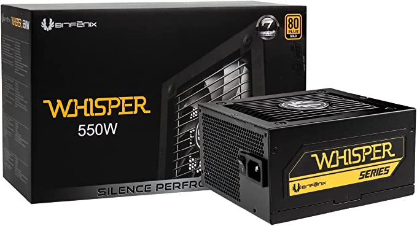

High Efficiency Layout
As the name suggests, Whisper is an extremely silent power supply with an 80+ Gold Efficiency certification. Because of the high efficiency layout and use of high quality components, the Whisper is capable of functioning with a very low noise and heat level while providing stable currents at highest loads.
Intelligent Fan-Curve
Thanks to the use of an Intelligent Fan Control Curve the fan speed is intelligently controlled to minimize the noise levels while maintaining optimum temperatures.
Whisper can operate at room temperature with minimum noise even at 60% load, meaning that the noise level is dead silent even carrying out intensive work loads.
Ultra Efficient
Whisper is rated at a Power Factor of 0.99, and is extremely efficient with an 80+ Gold efficiency certification. With 87+ (20% to 100% load)/ 90+ (40% to 70% load) high efficiency design, Whisper saves both energy and money for the user while providing extremely stable power output at a very low noise level
Read More
Return